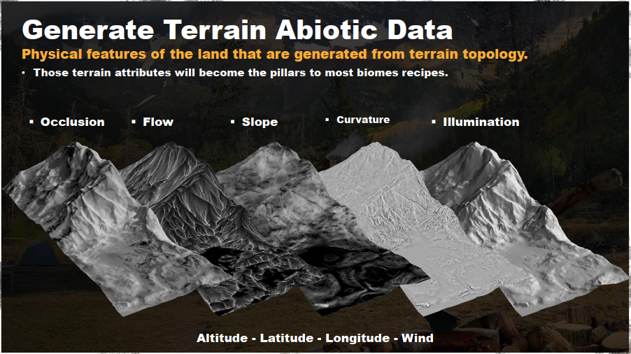

Notes for "Procedural World Generation of 'Far Cry 5'" GDC2018
TLDW Summary: This talk is about how FC5 developers created a pipeline for generating a realistic game world using procedural recipes. The talk contains a high-level overview of the pipeline with two deep dives into the details of the tools.
Key Terms
- procedural workflow
- an ecosystem of procedural tools
- Houdini Engine
- biome recipes
- determinism
- terrain
- 2d mask
Presentation Time Stamps
- at minute 2 Introduction
- at minute 2 The goals of the procedural pipeline
- at minute 6 The tools that were developed
- at minute 15 The system from the user’s point of view
- at minute 12 How the pipeline is working under the hood
- at minute 16 The Cliff generation tool
- at minute 25 The Biome generation tool
- at minute 46 What changed during development
- at minute 49 Conclusion
- at minute 52 Q&A
Key Concepts
- biome : an area of a game world with distinct terrain, vegetation, and animal life.
Carrier, Etienne. Procedural World Generation of 'Far Cry 5'. Mar. 2018, GDC, GDC Vault Slide Location. Presentation Slide #71.
- map : parts of a game world that are not loaded at the same time
- section : a part of a map (256m X 256m)
- sector : a part of a section (64m X 64m), the smallest part of a world that can be baked
Carrier, Etienne. Procedural World Generation of 'Far Cry 5'. Mar. 2018, GDC, GDC Vault Slide Location. Presentation Slide #34.
- recipe : a set of rules that given a set of inputs determines what entities need to be placed at a given location
- points of interest : a map location reserved for user input and editing
The Problems/Challenges
- Filling up empty space is easy, but filling it up so it looks natural is a big challenge.
- The workflow required to fill up large open spaces beautifully, quickly, while maintaining the flexibility for applying user input.
- The workflow had to allow fine-tuning of smaller locations to deliver tight gameplay experiences.
- Terraforming can’t be locked at the start of the project
- The terrain of the game would be constantly changing, and the biomes would need to be constantly updated. Updating the biomes by hand wasn’t an option.
- The asset placement needs to be consistent with the terrain topology.
- The pipeline needs to run without human intervention to regenerate the content in a build farm setting.
- The pipeline needs to generate small sections of the world separately.
- The parts of the world should be generated deterministically to enable stitching parts together.
Propositions
- The biomes procedural system should be able to simulate natural phenomena.
Carrier, Etienne. Procedural World Generation of 'Far Cry 5'. Mar. 2018, GDC, GDC Vault Slide Location. Presentation Slide #80.
Carrier, Etienne. Procedural World Generation of 'Far Cry 5'. Mar. 2018, GDC, GDC Vault Slide Location. Presentation Slide #99.
- Build biome recipes that react to the physical features of the land to ensure coherence throughout the world
Carrier, Etienne. Procedural World Generation of 'Far Cry 5'. Mar. 2018, GDC, GDC Vault Slide Location. Presentation Slide #89.
-
The iterative process is vital to the quality of the game
- Use Houdini Engine to run the full map generation in a nightly build
- same input = same result (determinism matters)
- The ecosystem of tools needs to be user friendly
- shelf tools
- be able to override procedural results
- User must be able to bake data as they work
Key Points
- They developed a sophisticated procedural pipeline for creating a realistic game world using Houdini and Houdini Engine
- Originally they just wanted to develop the biome tool, but they ended up developing a suite of tools.
- The heart of the pipeline is the data exchange between the Houdini Engine and the Game Engine
Carrier, Etienne. Procedural World Generation of 'Far Cry 5'. Mar. 2018, GDC, GDC Vault Slide Location. Presentation Slide #70.
- They developed an ecosystem of procedural tools, where one tool would provide the input to the next tool
Carrier, Etienne. Procedural World Generation of 'Far Cry 5'. Mar. 2018, GDC, GDC Vault Slide Location. Presentation Slide #38.
- They regenerate the entire game world every night on special build machines.
Notable parts of the talk
User Iteration Workflow
timestamp: 6 minutes into the presentation
- Terraforming pass
- Define freshwater Carrier, Etienne. Procedural World Generation of ‘Far Cry 5’. Mar. 2018, GDC, GDC Vault Slide Location. Presentation Slide #22.
- Run the cliff generation tool to create cliffs on steep terrain
- Use Biome painter and run procedural generation to spawn the vegetation
- Setting up Points of Interest (a.k.a. location)
Carrier, Etienne. Procedural World Generation of ‘Far Cry 5’. Mar. 2018, GDC, GDC Vault Slide Location. Presentation Slide #26.
- Paint an area with the grass Biome
- Laying down a road spline
- Bake roads and refresh biome
- Add buildings, props
- Apply terrain texture
- Add more Trees with the forest sub-biome
- Bake/refresh biome
- Add fence spline
- Add power line spline
- Snap power line connector to house
- Bake/refresh biome
User Non-Destructive Workflow
timestamp: 11 minutes into the presentation
- Update level of terrain
- Bake/refresh biome
Carrier, Etienne. Procedural World Generation of 'Far Cry 5'. Mar. 2018, GDC, GDC Vault Slide Location. Presentation Slide #35.
How the pipeline is working under the hood
timestamp: 12 minutes into the presentation
- At the heart of the pipeline is the data exchange between the Houdini Engine and the Game Engine
- Inputs for the pipeline are sent from the Game Engine to Houdini via a Python Script
- world information
- spline & shapes
- file paths
- Terrain Sectors (Main input that the generation is linked to)
- heightmaps
- Biome painter
- 2D terrain masks
- Houdini Geometry (that might have been generated by another procedural tool)
- Outputs of Houdini
- List of outputs
- Entity point could
Carrier, Etienne. Procedural World Generation of 'Far Cry 5'. Mar. 2018, GDC, GDC Vault Slide Location. Presentation Slide #37.
- Terrain texture layers
- Terrain heightmap layers
- 2D terrain data
- Geometry
- Terrain logic zones
- The data is saved onto a disk using temp “buffers”
- List of outputs
- The output of one tool influences the output of another tool
- The tools use masks to communicate with each other
Examples of tools
Cliffs tool
timestamp: 16 minutes into the presentation
Carrier, Etienne. Procedural World Generation of 'Far Cry 5'. Mar. 2018, GDC, GDC Vault Slide Location. Presentation Slide #65.
Biomes Tool
timestamp: 25 minutes into the presentation

Carrier, Etienne. Procedural World Generation of 'Far Cry 5'. Mar. 2018, GDC, GDC Vault Slide Location. Presentation Slide #69.
Lessons Learned
timestamp: 46 minutes into the presentation
- Making the steps of the pipeline simple. Don’t require knowledge of when the underlying data is generated or how it affects the downstream tasks.
- The blending of biomes is a complicated feature for the users to use and the developers to debug.
- This level of customization and generation at this scale can impact the gameplay.
- This is just a taste of what is possible to produce using this type of procedural technology.
- You won’t get it right on your first try. Keep iterating and simplifying the pipeline. Be flexible - plans and requirements change.
- Pay attention to how the users use the tools. If you think a feature will be useful it doesn’t mean that the users will use it.
Thoughts
Solved Problems/Challenges
Did they solve what they set out to solve?
- They shipped FC5
- They developed suite of tools:
- The freshwater tool
- Fences & power line tool
- Cliff generation tool
- Biome tool (to spawn vegetation)
- Fog tool
- World map tool (scatter trees on the world map)
- Power line tool
- Auto snapping if a user made an error (with-in a given threshold distance)
- The pipeline is automated and runs nightly
- The workflow allowed for quick iteration and the ability to “bake as you work”
- Use biome recipes to define what vegetation will be placed in different parts of the map (near water, near cliffs, at high altitude)
Practical Truths
General Tools Development Wisdom
- “At first you won’t understand the problem”. - You won’t get a system design “right” from the first attempt.
- “You are not your users”. - If you think something is a good feature, it doesn’t mean that the users will think so.
- “Users don’t have to know the implementation details”. - Users will not remember complicated cause-and-effect scenarios.
- “Watch out for Hidden Cascade Effects”. - In a fully automated system, a user might not see/ suspect that their changes are affecting another system that is out of view.
- “The speed of iteration is vital to the quality of the game”. - Don’t let the tools be the bottleneck of the iteration process.
Practical Principles
General Tools Development Principles
- Enable user input and customization inside a procedural generation system.
- Observe users to understand what is important for them.
- K.I.S.S.: Keep It Stupid Simple
- Search for the balance between control and automation.
Questions that came to mind
- What are some websites/resources about good Digital Content Creation tool architecture/patterns? Maybe even some checklists?
- Like :
- “Don’t forget to make a headless client for your tool”
- “Don’t forget to add python scripting”
- “Don’t forget to think about determinism when saving
- Like :
- Is there any alternative to Houdini? (not counting rolling your own)
- How do they edit the road network that spans multiple maps (parts of the world)?
- How long into the future when level art for second class points of interest will be fully defined by recipes? When will it be mainstream?
These notes are just the main ideas of the talk. They don’t contain anecdotes and examples. If you want to learn more, I would advise watching the talk on the GDC Vault.
The Toolsmiths

I took these notes as part of our little “Book Club” for GDC Vault Videos The Toolsmiths #vault club
Join us on Slack.
Join us on Twitter.
Links
Related Talks\Videos
- GDC 2017 ‘Ghost Recon Wildlands’: Terrain Tools and Technology
- GDC 2018 Terrain Rendering in ‘Far Cry 5’
- GDC 2018 The Asset Build System of ‘Far Cry 5’
- GAT #69: River - 2k19 Edition